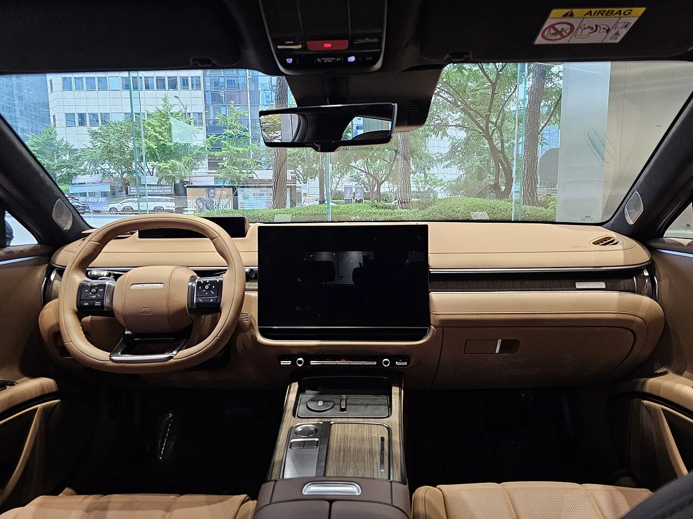

▲ 현대 더 뉴 그랜저. 7월 8,532대로 1위를 지켰지만 1만 대 선이 무너졌다
7월 국산차 판매가 10만7,919대로 집계됐습니다. 6월 12만826대에서 1만2,907대(10.7%)가 빠진 수치입니다.
원인은 명확합니다. 6월 말로 끝난 승용차 개별소비세 3.5% 한시 인하입니다. 세금이 오르기 전에 사려는 수요가 6월에 몰렸고, 7월은 그 반작용을 그대로 맞았습니다.
다만 이 낙폭이 모든 차에 똑같이 떨어진 것은 아닙니다. 같은 달에 판매가 20% 넘게 늘어난 차도 있었습니다. 이 차이가 이번 순위표의 진짜 내용입니다.
1. 순위표 전체 — 열 자리의 명암
먼저 숫자부터 보겠습니다. 7월 국산차 판매 상위 10개 차종과 전월 대비 증감입니다.
| 순위 | 차종 | 판매대수 | 전월 대비 |
|---|---|---|---|
| 1 | 현대 더 뉴 그랜저 | 8,532대 | -1,530대 (-15.2%) |
| 2 | 기아 셀토스 | 7,427대 | +742대 (+11.1%) |
| 3 | 기아 카니발 | 6,917대 | +650대 (+10.4%) |
| 4 | 기아 쏘렌토 | 6,153대 | -2,408대 (-28.1%) |
| 5 | 기아 스포티지 | 5,381대 | -795대 (-12.9%) |
| 6 | 기아 레이 | 5,178대 | +1,019대 (+24.5%) |
| 7 | 현대 쏘나타 디 엣지 | 4,584대 | -518대 (-10.2%) |
| 8 | 현대 포터2 | 4,280대 | +752대 (+21.3%) |
| 9 | 현대 싼타페 | 3,822대 | -246대 (-6.0%) |
| 10 | 기아 EV3 | 3,467대 | +629대 (+22.2%) |
10개 중 5개가 늘고 5개가 줄었습니다. 전체 시장이 10.7% 빠진 달에 절반이 성장한 셈입니다. 총량만 보면 놓치는 대목입니다.

▲ 기아 쏘렌토. 한 달 만에 2,408대가 빠지며 가장 큰 낙폭을 기록했다
2. 쏘렌토 -2,408대, 무슨 일이 있었나
가장 눈에 띄는 것은 쏘렌토입니다. 6월 8,561대에서 7월 6,153대로 2,408대가 사라졌습니다. 비율로는 28.1%, TOP 10 중 압도적인 1위 낙폭입니다.
여기에는 두 가지가 겹쳤습니다. ①개별소비세 종료 전 선수요입니다. 쏘렌토는 3,000만 원대 후반에서 시작하는 중형 SUV라 개소세 인하 효과를 체감하기 좋은 가격대입니다. 6월에 계약이 몰릴 이유가 충분했습니다.
②6월에 밀린 하이브리드 대기 물량이 한꺼번에 출고된 것도 원인입니다. 6월 실적이 부풀려진 만큼 7월이 상대적으로 더 낮아 보이는 구조입니다.
즉 쏘렌토의 -28.1%는 수요가 죽은 것이 아니라 6월에 앞당겨진 것에 가깝습니다. 실제로 쏘렌토는 여전히 4위입니다.
3. 그랜저의 1만 대 붕괴는 다른 이야기
그랜저는 8,532대로 1위를 지켰습니다. 그런데 6월 1만62대에서 1,530대가 빠지며 1만 대 선 아래로 내려왔습니다.
낙폭 비율(-15.2%)만 보면 쏘렌토의 절반 수준입니다. 하지만 1만 대라는 숫자는 국산 세단에서 상징적인 선입니다. 그랜저가 이 선을 지키느냐가 국내 준대형 세단 시장의 체력을 보여주는 지표로 읽혀왔기 때문입니다.
그랜저에는 개소세 요인 외에 하나가 더 있습니다. 최근 26년형 재고가 소진되면서 페이스리프트 라인업으로 통합되는 과정에 있습니다. 구형 재고를 밀어내던 시기가 끝나면 일시적으로 물량이 조정됩니다.

▲ 그랜저 실내. 페이스리프트 라인업 통합 과정에서 물량이 조정된 영향도 겹쳤다
4. 왜 어떤 차는 오히려 늘었나
개소세 종료라는 같은 조건에서 레이(+24.5%)·포터2(+21.3%)·EV3(+22.2%)·셀토스(+11.1%)·카니발(+10.4%)은 오히려 늘었습니다. 공통점이 있습니다.
📌 7월에 오히려 판매가 늘어난 차종의 공통점
- 레이 — 경차는 개별소비세가 애초에 면제입니다. 인하 종료의 영향을 받을 이유가 없습니다.
- 포터2 — 화물차 역시 개소세 과세 대상이 아닙니다. 생계형 수요라 세제 변화보다 사업 여건에 반응합니다.
- EV3 — 전기차는 개소세 감면이 별도로 적용되고, 여기에 보조금·제조사 프로모션이 더 크게 작동합니다.
- 셀토스 — 3세대 신형 출시 효과가 아직 살아 있는 구간입니다.
- 카니발 — 대체재가 사실상 없는 미니밴 시장의 특성상 수요가 시기에 덜 흔들립니다.
정리하면 개소세 인하의 수혜를 받지 않았던 차들이 그 종료의 피해도 받지 않았습니다. 당연한 이야기 같지만, 이번 순위표에서 실제로 확인된다는 점이 중요합니다.

▲ 기아 레이. 경차는 개별소비세 면제 대상이라 종료 영향을 받지 않았다
5. 이 숫자를 어떻게 읽어야 하나
7월 실적은 시장이 나빠졌다는 신호로 보기에는 이릅니다. 6월에 몰린 수요를 7월에서 빼온 구조이기 때문입니다. 6월과 7월을 합쳐 평균을 내면 22만8,745대, 월평균 11만4,372대 수준입니다.
오히려 주목할 것은 세제 변수에 흔들리지 않는 차종이 상위권에 자리를 잡고 있다는 점입니다. TOP 10 안에 경차 1대(레이), 화물차 1대(포터2), 전기차 1대(EV3)가 들어와 있습니다.
특히 기아 EV3가 3,467대로 10위에 올랐다는 사실은 눈여겨볼 만합니다. 국고·지자체 보조금과 제조사 프로모션이 겹치면서 실구매가가 크게 내려간 효과입니다.
6. 정리
7월 국산차 시장은 10만7,919대로 전월 대비 10.7% 줄었습니다. 그랜저는 1만 대 선이 무너졌고, 쏘렌토는 2,408대가 빠지며 가장 큰 낙폭을 기록했습니다.
다만 이는 6월 말 종료된 개별소비세 인하에 따른 수요 이전 성격이 강합니다. 같은 달에 레이·포터2·EV3·셀토스·카니발은 오히려 판매가 늘었고, 이들은 모두 개소세 인하와 무관하거나 별도 요인이 작동하는 차종입니다.
8월 실적이 나와야 시장 체력을 제대로 판단할 수 있습니다. 7월 숫자만으로 추세를 단정하기는 어렵습니다.